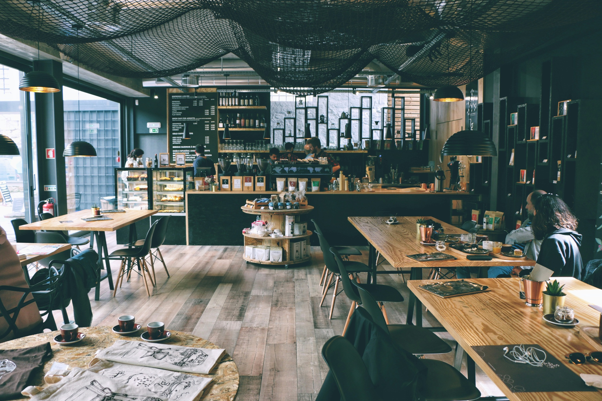
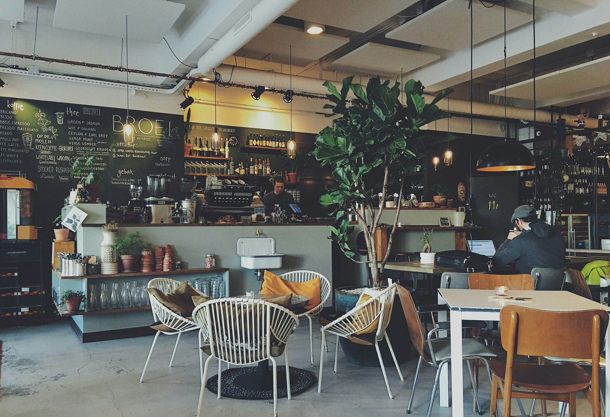
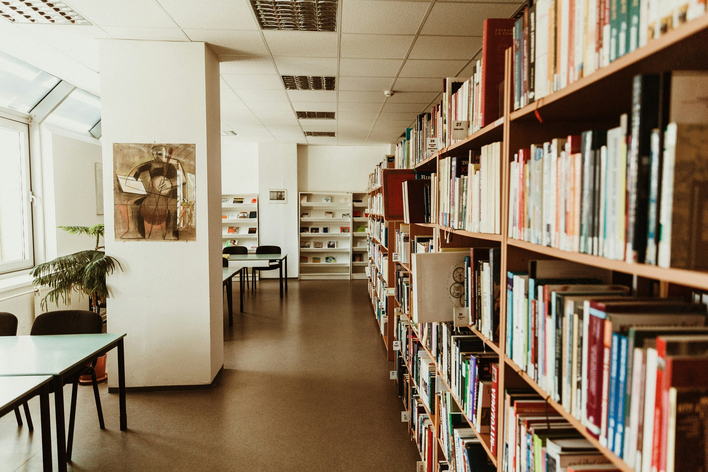
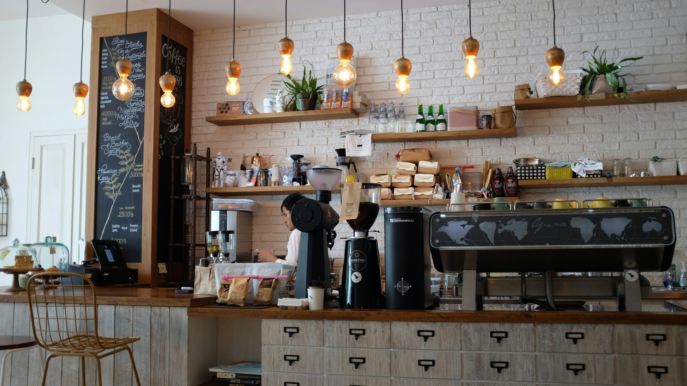

Vietas, kur studēt ārpus LU:
MiiT Coffee
Populāra starp studentiem - ar elektrības kontaktiem, stabilu Wi-Fi un lielisku kafiju.
Caffeine (Aspazijas bulvāris)
Draudzīga vieta ar ātru internetu, ērtiem galdiem un garšīgu kafiju. Populāra starp studentiem.
RTU Zinātniskā bibliotēka
Klusa vide ar daudzām darba vietām, ideāla studentiem, kas vēlas koncentrēties uz mācībām ārpus LU.
Bibliotēka "Tērbatas kvartāls"
Atjaunotā publiskā bibliotēka piedāvā ērtus galdiņus un klusuma zonas studentiem.
RSU Bibliotēka
Moderni aprīkota bibliotēka ar klusajām zonām, Wi-Fi un elektrības pieslēgumiem.
Rocket Bean Roastery
Plaša telpa, daudz dabīgās gaismas un garda kafija — ideāla vieta darbam pie klēpjdatora.